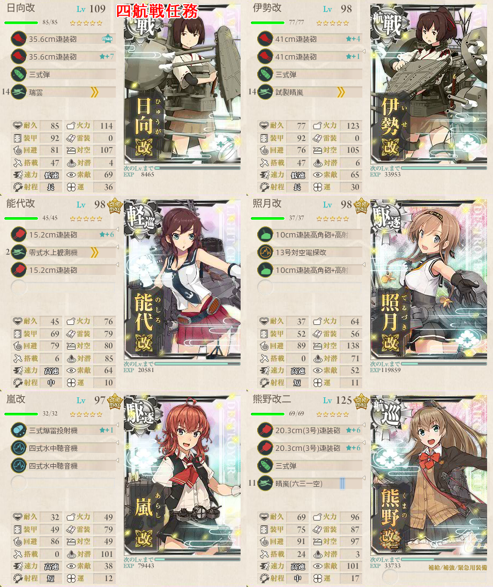
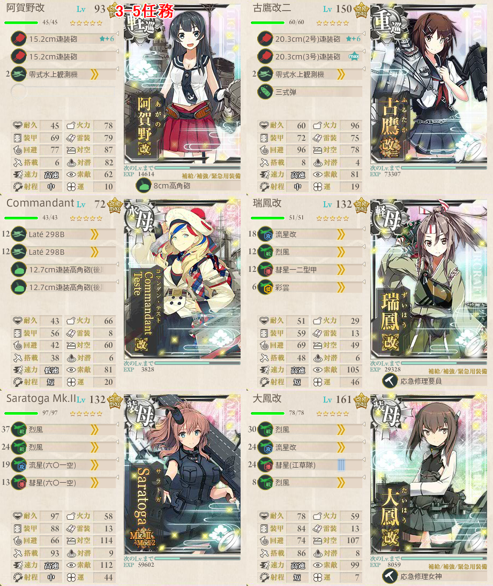

【艦これ】3-5 北方AL海域【マンスリー】
目次
3-5 北方AL海域 攻略メモ
構成
通常時は下ルートを通る編成で
水母１ 軽巡１ 駆逐４
まれにAに反れるが、その時は諦めて帰る
ラストダンスは上ルート
重巡１ 航巡２ 空母３
三式弾を搭載すること
下ルートはキラ付け推奨
四航戦任務

Cマスを回避して先制対潜を積み、AEFKルート
航巡には制空権補助のために水上戦闘機を載せても良い
- 三式弾は正直、効果があまり実感できない
あるいは潜水艦を混ぜてもACFKでも良い
北方海域戦闘哨戒を実施せよ！

ボスに2回S勝利
軽空母1 水母1 軽巡1が必須
軽空母を含むため、開幕Aへの分岐は確定
- AからEへは行けない
考えうるルートは2種類
- ACFK（4戦）
- ADBGK（4戦）
- ADBEFK（5戦）
ただし、BからGへ固定するには空母0である必要があり、今回の制限では不可能
- 一応、軽巡3でG寄りランダムには調整できそう？
戦艦3以上または空母2以上または雷巡2以上でCに分岐するため、D経由でFマスを踏むと苦戦を強いられる
以上から、安定のためには北ルートACFKを突っ切るのが早そう
- 制空権を考えると空母3
Fマスは最終段階になると強化されるため、強化前にこなしてしまうと良い
出撃ログ
2018年5月
| 回数 | 編成 | ルート | 戦果 |
|---|---|---|---|
| 1 | 瑞穂 阿賀野 涼風 谷風 朝雲 初春 | BGK | S勝利（伊58） |
| 2 | 瑞穂 鬼怒 涼風 叢雲 朝雲 満潮 | B | 満潮大破 |
| 3 | 瑞穂 鬼怒 涼風 叢雲 朝雲 初春 | BGK | S勝利（高雄） |
| 4 | 千歳 鬼怒 涼風 暁 谷風 朝雲 | BGK | S勝利 |
| 5 | 鈴谷 古鷹 熊野 天城 蒼龍 Intrepid | ACFK | S勝利 ゲージ破壊 |
| 6 | 鈴谷 古鷹 熊野 Saratoga 葛城 Intrepid | ACF | 葛城大破 お茶 |
| 7 | 鈴谷 古鷹 利根 蒼龍 天城 Intrepid | ACFK | F お茶 S勝利 お米 |
2018年4月
| 回数 | 編成 | ルート | 戦果 |
|---|---|---|---|
| 1 | 瑞穂 鬼怒 荒潮 涼風 初春 谷風 | BGK | S勝利（比叡） |
| 2 | 千歳 阿賀野 荒潮 朝雲 初春 谷風 | BGK | S勝利（伊58） |
| 3 | 千代田 阿賀野 荒潮 朝雲 初春 谷風 | BGK | S勝利（山城） |
| 4 | 鈴谷 熊野 古鷹 蒼龍 葛城 Saratoga | ACFK | S勝利（伊19） ゲージ破壊 |
2018年3月
| 回数 | 編成 | ルート | 戦果 |
|---|---|---|---|
| 1 | 大淀 日向 伊勢 初月 扶桑 伊26 | ACFK | S勝利（伊8） |
| 2 | 瑞穂 鬼怒 谷風 朝雲 涼風 暁 | BGK | S勝利（榛名） |
| 3 | commandant Teste 鬼怒 谷風 朝雲 涼風 暁 | BGK | S勝利（祥鳳） |
| 4 | 鈴谷 熊野 古鷹 葛城 蒼龍 大鳳 | ACFK | S勝利（長良） ゲージ破壊 |
2018年2月
| 回数 | 編成 | ルート | 戦果 |
|---|---|---|---|
| 1 | 瑞穂 鬼怒 時津風 荒潮 涼風 暁 | BGK | S勝利（島風） |
| 2 | 瑞穂 鬼怒 谷風 荒潮 涼風 暁 | A | 撤退 |
| 3 | 瑞穂 鬼怒 朝雲 荒潮 涼風 暁 | BGK | S勝利（谷風） |
| 4 | Commandant Teste 長良 谷風 藤波 荒潮 涼風 | A | 撤退 |
| 5 | Commandant Teste 長良 谷風 藤波 荒潮 時津風 | BG | 長良大破 |
| 6 | 秋津洲 長良 谷風 藤波 荒潮 時津風 | A | 撤退 |
| 7 | 秋津洲 長良 谷風 藤波 涼風 時津風 | B | 涼風大破 |
| 8 | 千歳 長良 谷風 藤波 涼風 時津風 | A | 撤退 |
| 9 | 千代田 長良 谷風 藤波 涼風 時津風 | A | 撤退 |
| 10 | 千代田 鬼怒 谷風 藤波 涼風 時津風 | B | 鬼怒大破 |
| 11 | 千代田 長良 谷風 藤波 涼風 時津風 | A | 撤退 |
| 12 | 千代田 長良 谷風 藤波 荒潮 時津風 | BGK | S勝利（長良） |
| 13 | 鈴谷 古鷹 熊野 Aquila 葛城 大鳳 | ACFK | S勝利（日向） ゲージ破壊 |
2018年1月
| 回数 | 編成 | ルート | 戦果 |
|---|---|---|---|
| 1 | 鬼怒 山城 瑞穂 龍驤 Saratoga 大鳳 | ACFI | I反れ |
| 2 | 阿賀野 古鷹 Commandant Teste 瑞鳳 Saratoga 大鳳 | A | 阿賀野大破 |
| 3 | 阿賀野 古鷹 Commandant Teste 瑞鳳 Saratoga Aquila | ACF | Commandant Teste大破 |
| 4 | 阿賀野 古鷹 Commandant Teste 瑞鳳 Saratoga 大鳳 | AC | 阿賀野大破 |
| 5 | 阿賀野 古鷹 Commandant Teste 祥鳳 Saratoga 大鳳 | A | 祥鳳大破 |
| 6 | 阿賀野 古鷹 Commandant Teste 隼鷹 Saratoga 大鳳 | ACFK | S勝利（島風） |
| 7 | 阿賀野 青葉 瑞穂 隼鷹 Saratoga 大鳳 | AC | 阿賀野大破 |
| 8 | 阿賀野 青葉 Aquila 大鳳 隼鷹 瑞穂 | ACFK | S勝利（川内） |
| 9 | 瑞穂 鬼怒 時津風 朝雲 荒潮 涼風 | BGK | S勝利（鬼怒） |
| 10 | 鈴谷 古鷹 熊野 大鳳 葛城 Saratoga | AC | 古鷹大破 |
| 11 | 鈴谷 青葉 熊野 Aquila 葛城 Saratoga | ACFK | S勝利（高雄） ゲージ破壊 |
2017年12月
| 回数 | 編成 | ルート | 戦果 |
|---|---|---|---|
| 1 | 瑞穂 長良 黒潮 時津風 涼風 暁 | BGK | S勝利 |
| 2 | 瑞穂 長良 黒潮 時津風 谷風 暁 | BGK | S勝利（長良） |
| 3 | 瑞穂 鬼怒 黒潮 時津風 藤波 荒潮 | A | 撤退 |
| 4 | 瑞穂 阿賀野 黒潮 涼風 藤波 荒潮 | BGK | S勝利（衣笠） |
| 5 | 鈴谷 古鷹 熊野 大鳳 葛城 Saratoga | ACFK | S勝利（島風） ゲージ破壊 |
2017年11月
| 回数 | 編成 | ルート | 戦果 |
|---|---|---|---|
| 1 | 瑞穂 鬼怒 暁 谷風 荒潮 涼風 | BGK | S勝利（祥鳳） |
| 2 | 瑞穂 鬼怒 黒潮 谷風 荒潮 時津風 | A | 撤退 |
| 3 | 千歳 鬼怒 黒潮 谷風 荒潮 時津風 | BG | 時津風大破 |
| 4 | 千歳 鬼怒 藤波 涼風 荒潮 時津風 | B | 藤波大破 |
| 5 | 千歳 鬼怒 藤波 涼風 黒潮 暁 | BGK | S勝利（妙高） |
| 6 | 瑞穂 阿賀野 黒潮 時津風 藤波 荒潮 | BGK | S勝利（明石） |
| 7 | 筑摩 古鷹 利根 葛城 大鳳 Saratoga | ACFK | S勝利（最上） ゲージ破壊 |
2017年10月
| 回数 | 編成 | ルート | 戦果 |
|---|---|---|---|
| 1 | 瑞穂 阿賀野 荒潮 時津風 藤波 涼風 | A | 撤退 |
| 2 | Commandant Teste 阿賀野 荒潮 時津風 藤波 涼風 | BGK | S勝利（鬼怒） |
| 3 | Commandant Teste 阿賀野 黒潮 時津風 藤波 涼風 | B | 黒潮大破 |
| 4 | Commandant Teste 阿賀野 暁 時津風 藤波 涼風 | A | 撤退 |
| 5 | Commandant Teste 阿賀野 黒潮 谷風 藤波 涼風 | BGK | S勝利（球磨） |
| 6 | 瑞穂 鬼怒 村雨 黒潮 時津風 藤波 | B | 村雨大破 |
| 7 | 瑞穂 阿賀野 荒潮 黒潮 時津風 藤波 | BGK | A勝利（筑摩） |
| 8 | 古鷹 利根 鈴谷 天城 大鳳 Saratoga | ACFK | S勝利（国後） ゲージ破壊 |
2017年9月
| 回数 | 編成 | ルート | 戦果 |
|---|---|---|---|
| 1 | 瑞穂 長良 大潮 村雨 黒潮 荒潮 | BGK | S勝利（日向） |
| 2 | 瑞穂 鬼怒 黒潮 谷風 涼風 暁 | A | 撤退 |
| 3 | 瑞穂 鬼怒 黒潮 村雨 涼風 荒潮 | B | 瑞穂大破 |
| 4 | 瑞穂 川内 黒潮 村雨 涼風 荒潮 | BG | 涼風大破 |
| 5 | 瑞穂 川内 黒潮 村雨 涼風 谷風 | BGK | S勝利（龍驤） |
| 6 | 瑞穂 川内 荒潮 暁 水無月 谷風 | A | 撤退 |
| 7 | 瑞穂 川内 荒潮 暁 村雨 谷風 | BGK | S勝利（妙高） |
| 8 | 鈴谷 那智 熊野 葛城 大鳳 Saratoga | AC | 那智大破 |
| 9 | 鈴谷 那智 熊野 葛城 Aquila Saratoga | ACF | 熊野大破 |
| 10 | 鈴谷 那智 熊野 Gref Zeppelin Aquila Saratoga | ACFK | S勝利（阿武隈） ゲージ破壊 |
2017年8月
| 回数 | 編成 | ルート | 戦果 |
|---|---|---|---|
| 1 | 瑞穂 阿賀野 荒潮 涼風 暁 時津風 | BGK | S勝利（伊8） |
| 2 | 瑞穂 阿賀野 荒潮 大潮 暁 村雨 | BGK | S勝利（北上） |
| 3 | 瑞穂 鬼怒 時津風 荒潮 文月 黒潮 | A | 撤退 |
| 4 | 瑞穂 鬼怒 時津風 荒潮 文月 黒潮 | BGK | S勝利（伊勢） |
| 5 | 熊野 古鷹 利根 天城 大鳳 Saratoga | ACFK | S勝利（隼鷹） ゲージ破壊 |
2017年7月
| 回数 | 編成 | ルート | 戦果 |
|---|---|---|---|
| 1 | 瑞穂 能代 萩風 大潮 村雨 荒潮 | BGK | S勝利（扶桑） |
| 2 | 瑞穂 能代 萩風 大潮 涼風 荒潮 | B | 萩風大破 |
| 3 | 瑞穂 能代 萩風 暁 涼風 荒潮 | B | 涼風大破 |
| 4 | 瑞穂 能代 萩風 暁 涼風 黒潮 | BG | 涼風大破 |
| 5 | Commandant Teste 能代 萩風 暁 村雨 時津風 | BG | 村雨大破 |
| 6 | Commandant Teste 能代 大潮 黒潮 村雨 荒潮 | BGK | S勝利（扶桑） |
| 7 | Commandant Teste 能代 大潮 萩風 村雨 荒潮 | A | 撤退 |
| 8 | Commandant Teste 能代 大潮 萩風 涼風 荒潮 | A | 撤退 |
| 9 | Commandant Teste 能代 大潮 萩風 涼風 黒潮 | B | 黒潮大破 |
| 10 | Commandant Teste 能代 大潮 暁 涼風 黒潮 | B | 涼風大破 |
| 11 | 瑞穂 能代 大潮 暁 村雨 黒潮 | BGK | S勝利（龍驤） |
| 12 | 古鷹 熊野 利根 天城 大鳳 Saratoga | ACFK | S勝利（金剛） ゲージ破壊 |
2017年6月
| 回数 | 編成 | ルート | 戦果 |
|---|---|---|---|
| 1 | 瑞穂 能代 萩風 村雨 黒潮 時津風 | BGK | S勝利（扶桑） |
| 2 | 瑞穂 能代 萩風 大潮 時津風 黒潮 | A | 撤退 |
| 3 | 瑞穂 能代 萩風 大潮 涼風 黒潮 | BG | 涼風大破 |
| 4 | 瑞穂 能代 萩風 大潮 涼風 時津風 | BGK | S勝利（龍驤） |
| 5 | 瑞穂 能代 萩風 大潮 涼風 黒潮 | BG | 瑞穂大破 |
| 6 | 瑞穂 能代 萩風 村雨 涼風 黒潮 | A | 撤退 |
| 7 | 瑞穂 能代 萩風 村雨 荒潮 黒潮 | BGK | A勝利 ゲージ削りNG |
| 8 | 瑞穂 能代 萩風 大潮 時津風 黒潮 | BG | 大潮大破 |
| 9 | 瑞穂 阿賀野 萩風 大潮 涼風 黒潮 | BG | 大潮大破 |
| 10 | Commandant Teste 阿賀野 萩風 村雨 涼風 時津風 | B | 萩風 時津風大破 |
| 11 | Commandant Teste 能代 萩風 村雨 涼風 大潮 | BGK | S勝利（愛宕） |
| 12 | 古鷹 熊野 利根 天城 大鳳 Saratoga | ACFK | S勝利（妙高） ゲージ破壊 |
| 13 | 日向 伊勢 能代 照月 嵐 熊野 | AEFK | A勝利（日向） |
2017年5月
| 回数 | 編成 | ルート | 戦果 |
|---|---|---|---|
| 1 | 瑞穂 能代 涼風 村雨 時津風 黒潮 | A | 撤退 |
| 2 | 千歳 能代 荒潮 村雨 時津風 黒潮 | A | 撤退 |
| 3 | 千歳 能代 荒潮 萩風 時津風 黒潮 | BGK | A勝利 ゲージ削りNG |
| 4 | 千歳 能代 村雨 暁 谷風 三日月 | A | 撤退 |
| 5 | 瑞穂 能代 萩風 大潮 村雨 黒潮 | A | 撤退 |
| 6 | 瑞穂 能代 萩風 大潮 村雨 時津風 | BG | 村雨大破 |
| 7 | 瑞穂 能代 萩風 大潮 村雨 黒潮 | BGK | S勝利（衣笠） |
| 8 | 瑞穂 鬼怒 萩風 大潮 村雨 黒潮 | BGK | S勝利（伊19） |
| 9 | 瑞穂 能代 萩風 時津風 村雨 黒潮 | BGK | A勝利（利根） ゲージ削りOK |
| 10 | 古鷹 筑摩 利根 天城 Aquila Saratoga | ACF | 利根大破 |
| 11 | 古鷹 筑摩 利根 天城 大鳳 Saratoga | AC | Saratoga大破 |
| 12 | 古鷹 筑摩 利根 天城 大鳳 Saratoga | ACFK | S勝利（長良） ゲージ破壊 |
2017年4月
| 回数 | 編成 | ルート | 戦果 |
|---|---|---|---|
| 1 | 瑞穂 能代 磯波 萩風 黒潮 村雨 | A | 撤退 |
| 2 | 千歳 能代 磯波 萩風 時津風 村雨 | A | 撤退 |
| 3 | 千歳 能代 磯波 萩風 大潮 時津風 | BGK | S勝利（球磨） |
| 4 | 千歳 能代 磯波 萩風 大潮 時津風 | BGK | S勝利（祥鳳） |
| 5 | 瑞穂 能代 大潮 村雨 黒潮 涼風 | BG | 黒潮大破 |
| 6 | 瑞穂 鬼怒 大潮 萩風 黒潮 時津風 | BGK | S勝利（飛鷹） |
| 7 | 古鷹 熊野 利根 天城 大鳳 Saratoga | AC | 天城大破 |
| 8 | 古鷹 熊野 利根 天城 大鳳 Aquila | ACFK | S勝利（谷風） ゲージ破壊 |
2017年3月
| 回数 | 編成 | ルート | 戦果 |
|---|---|---|---|
| 1 | 瑞穂 能代 夕雲 磯波 嵐 萩風 | BG | 萩風大破 |
| 2 | 瑞穂 鬼怒 夕雲 磯波 嵐 萩風 | BG | 萩風大破 |
| 3 | 瑞穂 鬼怒 夕雲 大潮 嵐 萩風 | BG | 瑞穂、大潮大破 |
| 4 | 瑞穂 鬼怒 夕雲 大潮 村雨 萩風 | BGK | S勝利（飛鷹） |
| 5 | 瑞穂 能代 夕雲 磯波 嵐 萩風 | B | 嵐大破 |
| 6 | 瑞穂 能代 大潮 磯波 村雨 萩風 | BG | 瑞穂大破 |
| 7 | 瑞穂 能代 嵐 萩風 大潮 黒潮 | BG | 瑞穂大破 |
| 8 | 瑞穂 能代 嵐 夕雲 磯波 時津風 | BGK | S勝利（霧島） |
| 9 | 瑞穂 能代 嵐 萩風 磯波 時津風 | B | 瑞穂大破 |
| 10 | Commandant Teste 能代 嵐 萩風 磯波 時津風 | BGK | S勝利（扶桑） |
| 11 | 妙高 熊野 最上 大鳳 雲龍 赤城 | ACF | 妙高大破 |
| 12 | 妙高 筑摩 最上 大鳳 雲龍 赤城 | ACFK | S勝利（伊8） ゲージ破壊 |
| 13 | 大鳳 熊野 古鷹 妙高 雲龍 Saratoga | ACFK | S勝利 |
2017年2月
| 回数 | 編成 | ルート | 戦果 |
|---|---|---|---|
| 1 | 瑞穂 能代 夕雲 磯波 嵐 萩風 | B | 萩風大破 |
| 2 | 瑞穂 能代 大潮 磯波 嵐 村雨 | B | 能代大破 |
| 3 | 瑞穂 鬼怒 大潮 磯波 嵐 村雨 | B | 鬼怒大破 |
| 4 | 瑞穂 能代 大潮 磯波 嵐 村雨 | A | 撤退 |
| 5 | 瑞穂 能代 夕雲 時津風 嵐 村雨 | BGK | S勝利（日向） |
| 6 | Comandant Teste 鬼怒 夕雲 時津風 萩風 村雨 | B | 村雨大破 |
| 7 | Comandant Teste 鬼怒 夕雲 大潮 萩風 村雨 | BGK | S勝利（伊勢） |
| 8 | 瑞穂 能代 夕雲 磯波 嵐 萩風 | B | 嵐大破 |
| 9 | 瑞穂 阿賀野 夕雲 磯波 嵐 萩風 | A | 撤退 |
| 10 | 瑞穂 能代 大潮 磯波 嵐 村雨 | A | 撤退 |
| 11 | 瑞穂 能代 時津風 磯波 荒潮 村雨 | A | 撤退 |
| 12 | 瑞穂 能代 夕雲 磯波 荒潮 時津風 | A | 撤退 |
| 13 | 瑞穂 鬼怒 夕雲 磯波 荒潮 時津風 | BGK | S勝利（筑摩） |
| 14 | 摩耶 熊野 利根 大鳳 雲龍 赤城 | ACFK | F S勝利（まるゆ） K S勝利（利根） ゲージ破壊 |
2017年1月
| 回数 | 編成 | ルート | 戦果 |
|---|---|---|---|
| 1 | 五月雨 長門 初月 雲龍 瑞鶴 Saratoga | ACFI | |
| 2 | 五月雨 熊野 初月 雲龍 瑞鶴 大鳳 | ACFK | S勝利（隼鷹） |
| 3 | 磯波 熊野 初月 雲龍 瑞鶴 大鳳 | AC | 雲龍大破 |
| 4 | 磯波 利根 初月 雲龍 赤城 大鳳 | ACF | 初月大破 |
| 5 | 磯波 利根 初月 雲龍 赤城 瑞鶴 | ACFK | S勝利（龍驤） |
| 6 | 磯波 利根 初月 天城 赤城 瑞鶴 | ACFK | S勝利（明石） |
| 7 | 天城 最上 初月 磯波 Saratoga 瑞鶴 | ACF | 最上、磯波大破 |
| 8 | 天城 最上 照月 磯波 Saratoga 赤城 | ACF | 赤城大破 |
| 9 | 天城 最上 照月 磯波 瑞鶴 赤城 | ACF | 天城大破 |
| 10 | 天城 最上 照月 五月雨 瑞鶴 赤城 | AC | 初月大破 |
| 11 | 天城 最上 初月 五月雨 瑞鶴 Saratoga | A | 瑞鶴大破 |
| 12 | 天城 熊野 初月 五月雨 瑞鶴 Saratoga | ACF | 瑞鶴大破 |
| 13 | 天城 筑摩 初月 五月雨 瑞鶴 Saratoga | ACFK | S勝利（利根） ゲージ破壊 |
| 14 | 雲龍 熊野 夕雲 照月 瑞鶴 Saratoga | ACFK | A勝利（睦月） |
| 15 | 雲龍 熊野 五月雨 照月 瑞鶴 Saratoga | ACFK | S勝利（祥鳳） |
| 16 | 雲龍 筑摩 五月雨 照月 瑞鶴 Saratoga | ACFK | S勝利（榛名） |
2016年12月
| 回数 | 編成 | ルート | 戦果 |
|---|---|---|---|
| 1 | 瑞穂 能代 磯風 五月雨 夕雲 磯波 | BG | 五月雨大破 |
| 2 | Commandant Teste 鬼怒 磯風 五月雨 嵐 萩風 | A | 撤退 |
| 3 | Commandant Teste 鬼怒 磯風 磯波 大潮 萩風 | BGK | S勝利（伊8） |
| 4 | 瑞穂 能代 磯風 五月雨 夕雲 磯波 | BG | 五月雨大破 |
| 5 | 瑞穂 能代 磯風 五月雨 夕雲 磯波 | BGK | S勝利（隼鷹） |
| 6 | 瑞穂 鬼怒 五月雨 大潮 夕雲 嵐 | A | 撤退 |
| 7 | 瑞穂 鬼怒 五月雨 大潮 磯波 嵐 | BGK | S勝利（風雲） |
| 8 | Pola 熊野 利根 雲龍 瑞鶴 赤城 | ACF | 雲龍 赤城大破 |
| 9 | Pola 熊野 筑摩 雲龍 瑞鶴 赤城 | ACF | 雲龍 |
| 10 | 妙高 熊野 最上 天城 大鳳 赤城 | ACF | 大鳳大破 |
| 11 | 妙高 熊野 利根 天城 瑞鶴 Saratoga | A | 熊野大破 |
| 12 | 妙高 三隈 鈴谷 雲龍 瑞鶴 Saratoga | ACF | 瑞鶴大破 |
| 13 | 妙高 三隈 最上 雲龍 瑞鶴 Saratoga | ACFK | S勝利（谷風） ゲージ破壊 |
2016年11月
| 回数 | 編成 | ルート | 戦果 |
|---|---|---|---|
| 1 | 瑞穂 能代 磯風 五月雨 萩風 磯波 | BGK | S勝利（金剛） |
| 2 | 瑞穂 能代 嵐 時津風 萩風 磯波 | B | 嵐大破 |
| 3 | 瑞穂 鬼怒 嵐 時津風 萩風 磯波 | BG | 鬼怒、時津風、磯波大破 |
| 4 | 千歳 鬼怒 嵐 時津風 萩風 磯波 | BGK | S勝利（伊勢） |
| 5 | 瑞穂 能代 磯風 五月雨 夕雲 磯波 | BGK | S勝利（秋刀魚 球磨） |
| 6 | Pola 最上 筑摩 瑞鶴 雲龍 Aquila | ACFK | S勝利（秋刀魚 金剛） ゲージ破壊 |
2016年10月
| 回数 | 編成 | ルート | 戦果 |
|---|---|---|---|
| 1 | 瑞穂 多摩 磯波 磯風 五月雨 夕雲 | BGK | S勝利（伊19） |
| 2 | 瑞穂 能代 磯波 磯風 五月雨 夕雲 | BG | 瑞穂大破 |
| 3 | 瑞穂 鬼怒 磯風 夕雲 磯波 萩風 | A | 撤退 |
| 4 | 瑞穂 鬼怒 磯風 初風 五月雨 萩風 | BGK | A勝利（龍驤） ゲージ削りOK |
| 5 | 瑞穂 能代 磯風 初風 五月雨 嵐 | B | 初風大破 |
| 6 | 瑞穂 能代 夕雲 初風 五月雨 嵐 | BGK | S勝利（山城） |
| 7 | 摩耶 熊野 利根 瑞鶴 雲龍 天城 | ACF | 瑞鶴大破 |
| 8 | Zara 熊野 利根 大鳳 葛城 天城 | ACF | 大鳳大破 |
| 9 | Zara 熊野 利根 Aquila 葛城 天城 | AC | Aquila大破 |
| 10 | Pola 熊野 利根 瑞鶴 雲龍 天城 | ACF | 瑞鶴、雲龍大破 |
| 11 | Pola 最上 利根 瑞鶴 雲龍 天城 | ACFK | S勝利（秋雲） ゲージ破壊 |
2016年9月
| 回数 | 編成 | ルート | 戦果 |
|---|---|---|---|
| 1 | 千歳 能代 夕雲 初風 磯風 五月雨 | BG | 五月雨大破 |
| 2 | 千歳 能代 夕雲 江風 磯風 五月雨 | BGK | S勝利（川内） |
| 3 | 瑞穂 能代 磯風 江風 夕雲 時津風 | BGK | S勝利（妙高） |
| 4 | 瑞穂 多摩 磯風 江風 初風 嵐 | B | 初風 嵐大破 |
| 5 | 瑞穂 多摩 磯風 江風 初風 時津風 | BGK | S勝利（最上） |
| 6 | 摩耶 熊野 利根 天城 雲龍 瑞鶴 | ACFK | S勝利 ゲージ破壊 |
2016年8月
| 回数 | 編成 | ルート | 戦果 |
|---|---|---|---|
| 1 | 瑞穂 阿武隈 五月雨 江風 初風 磯風 | A | 撤退 |
| 2 | 瑞穂 阿武隈 五月雨 江風 初風 磯風 | BGK | A勝利（暁） ゲージ削りOK |
| 3 | 瑞穂 阿武隈 深雪 五月雨 初風 磯風 | BG | 阿武隈 深雪 磯風大破 |
| 4 | 瑞穂 阿武隈 深雪 夕雲 初風 磯風 | A | 撤退 |
| 5 | 瑞穂 阿武隈 江風 夕雲 卯月 磯風 | BG | 磯風大破 |
| 6 | 瑞穂 多摩 江風 深雪 卯月 磯風 | B | 江風大破 |
| 7 | 千歳 阿武隈 深雪 江風 初風 磯風 | A | 撤退 |
| 8 | 千代田 阿武隈 深雪 江風 五月雨 夕雲 | BGK | S勝利（川内） |
| 9 | 千代田 多摩 深雪 江風 磯風 卯月 | BGK | S勝利（谷風） |
| 10 | 摩耶 熊野 利根 赤城 瑞鶴 雲龍 | ACFK | S勝利（球磨） ゲージ破壊 |
2016年7月
| 回数 | 編成 | ルート | 戦果 |
|---|---|---|---|
| 1 | 瑞穂 阿武隈 夕雲 江風 初風 磯風 | BGK | S勝利（榛名） |
| 2 | 瑞穂 阿武隈 夕雲 五月雨 初風 磯風 | BGK | A勝利（大井） ゲージ削りOK |
| 3 | 瑞穂 多摩 夕雲 五月雨 初風 磯風 | BGK | S勝利 |
| 4 | 愛宕 利根 筑摩 飛龍 雲龍 赤城 | ACFK | S勝利（高雄） ゲージ破壊 |
2016年6月
| 回数 | 編成 | ルート | 戦果 |
|---|---|---|---|
| 1 | 瑞穂 阿武隈 深雪 江風 初風 磯風 | BGK | S勝利（霧島） |
| 2 | 瑞穂 阿武隈 五月雨 江風 夕雲 磯風 | BGK | S勝利（最上） |
| 3 | 瑞穂 阿武隈 五月雨 初風 夕雲 卯月 | A | 撤退 |
| 4 | 瑞穂 阿武隈 深雪 初風 夕雲 卯月 | BGK | S勝利（比叡） |
| 5 | 愛宕 熊野 利根 飛龍 大鳳 瑞鶴 | ACFK | S勝利（利根） ゲージ破壊 |
2016年5月
| 回数 | 編成 | ルート | 戦果 |
|---|---|---|---|
| 1 | 瑞穂 阿武隈 皐月 磯風 深雪 江風 | BG | 皐月大破 |
| 2 | 瑞穂 多摩 皐月 如月 深雪 江風 | BGK | S勝利（阿武隈） |
| 3 | 千歳 阿武隈 霞 初風 皐月 如月 | B | 千歳大破 |
| 4 | 千歳 能代 霞 初風 皐月 如月 | A | 撤退 |
| 5 | 千歳 阿武隈 深雪 初風 江風 如月 | BG | 初風大破 |
| 6 | 千歳 多摩 深雪 初風 霞 如月 | A | 撤退 |
| 7 | 千歳 多摩 深雪 江風 霞 如月 | B | 深雪大破 |
| 8 | 千歳 多摩 磯風 江風 霞 如月 | BG | 江風大破 |
| 9 | 瑞穂 多摩 磯風 皐月 深雪 初風 | BG | 磯風大破 |
| 10 | 瑞穂 多摩 磯風 江風 深雪 初風 | A | 撤退 |
| 11 | 千歳 多摩 霞 江風 深雪 初風 | BG | 初風大破 |
| 12 | 千歳 阿武隈 霞 江風 深雪 初風 | A | 撤退 |
| 13 | 千歳 阿武隈 霞 江風 深雪 五月雨 | BGK | S勝利（最上） |
| 14 | 瑞穂 阿武隈 皐月 如月 深雪 江風 | BGK | A勝利（妙高）ゲージ削りOK |
| 15 | Zara 熊野 利根 大鳳 瑞鶴 飛龍 | ACFK | S勝利（球磨）ゲージ破壊 |
2016年4月
| 回数 | 編成 | ルート | 戦果 |
|---|---|---|---|
| 1 | 瑞穂 阿武隈 如月 深雪 五月雨 卯月 | BGK | S勝利（川内） |
| 2 | 瑞穂 阿武隈 如月 深雪 初風 卯月 | A | 撤退 |
| 3 | 瑞穂 多摩 如月 深雪 初風 五月雨 | A | 撤退 |
| 4 | 千歳 多摩 如月 深雪 初風 夕雲 | BG | 如月大破 |
| 5 | 千歳 多摩 如月 谷風 時津風 五月雨 | BGK | S勝利（伊19） |
| 6 | 瑞穂 阿武隈 如月 五月雨 夕雲 磯風 | BGK | S勝利（金剛） |
| 7 | 衣笠 熊野 利根 瑞鶴 雲龍 蒼龍 | AC | 熊野大破 |
| 8 | 衣笠 熊野 利根 瑞鶴 雲龍 蒼龍 | ACFK | ゲージ破壊 S勝利（卯月） |
| 9 | 大潮 扶桑 利根 高雄 瑞鶴 蒼龍 | ACFK | S勝利（山雲） |
2016年3月
| 回数 | 編成 | ルート | 戦果 |
|---|---|---|---|
| 1 | 瑞穂 多摩 子日 如月 深雪 初風 | A | 撤退 |
| 2 | 瑞穂 多摩 子日 如月 深雪 五月雨 | BG | 深雪 五月雨大破 |
| 3 | 瑞穂 多摩 夕雲 如月 深雪 五月雨 | B | 深雪大破 |
| 4 | 瑞穂 多摩 夕雲 如月 卯月 五月雨 | B | 五月雨大破 |
| 5 | 瑞穂 多摩 夕雲 如月 卯月 深雪 | B | 卯月大破 |
| 6 | 瑞穂 多摩 夕雲 五月雨 卯月 深雪 | A | 撤退 |
| 7 | 瑞穂 阿武隈 夕雲 五月雨 卯月 深雪 | B | 深雪大破 |
| 8 | 瑞穂 阿武隈 如月 五月雨 卯月 深雪 | BGK | C敗北 |
| 9 | 瑞穂 阿武隈 夕雲 五月雨 卯月 深雪 | BG | 卯月大破 |
| 10 | 千歳 阿武隈 夕雲 五月雨 卯月 深雪 | BG | 卯月大破 |
| 11 | 千代田 阿武隈 夕雲 五月雨 卯月 深雪 | BGK | S勝利（高雄） |
| 12 | 千代田 阿武隈 夕雲 五月雨 如月 深雪 | BGK | A勝利（隼鷹） |
| 13 | 千代田 多摩 夕雲 五月雨 如月 深雪 | B | 如月 深雪大破 |
| 14 | 千代田 多摩 夕雲 五月雨 如月 初風 | BGK | A勝利（青葉） |
| 15 | 瑞穂 多摩 子日 如月 初風 夕雲 | A | 撤退 |
| 16 | 千歳 多摩 子日 卯月 初風 夕雲 | B | 子日 初風大破 |
| 17 | 千歳 多摩 子日 卯月 時津風 夕雲 | A | 撤退 |
| 18 | 千歳 多摩 子日 卯月 時津風 初風 | B | 初風大破 |
| 19 | 千歳 多摩 子日 卯月 時津風 夕雲 | B | 時津風大破 |
| 20 | 瑞穂 多摩 子日 初風 時津風 夕雲 | A | 撤退 |
| 21 | 瑞穂 多摩 子日 初風 時津風 如月 | BGK | S勝利（伊勢） |
| 22 | Printz Eugen 熊野 利根 加賀 翔鶴 瑞鶴 | ACFK | S勝利（阿武隈） ゲージ破壊 |